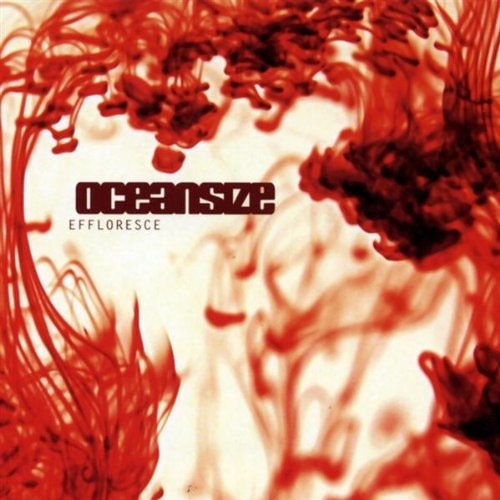
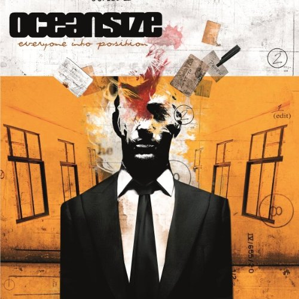
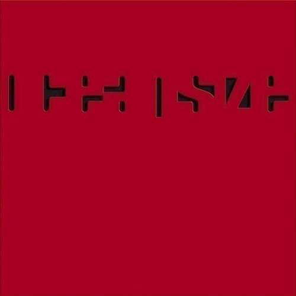
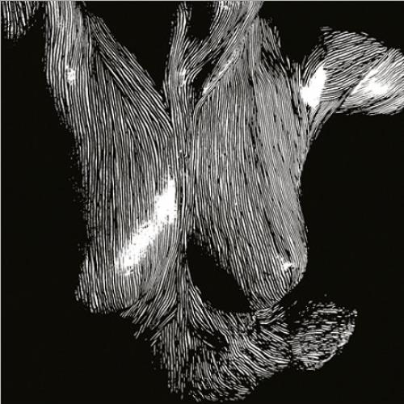

DISCOGRAFÍA
|  | 1. I Am the Morning – 4:18 |
| 2. Catalyst – 6:40 | |
| 3. One Day All This Could Be Yours – 4:19 | |
| 4. Massive Bereavement – 9:59 | |
| 5. Rinsed – 3:58 | |
| 6. You Wish – 6:00 | |
| 7. Remember Where You Are – 5:22 | |
| 8. Amputee – 5:32 | |
| 9. Unravel – 2:50 | |
| 10. Women Who Love Men Who Love Drugs – 8:30 | |
| 11. Saturday Morning Breakfast Show – 9:04 | |
| 12. Long Forgotten – 8:57 | |
|  | 1. The Charm Offensive – 7:19 |
| 2. Heaven Alive – 6:20 | |
| 3. A Homage to a Shame – 5:52 | |
| 4. Meredith – 5:26 | |
| 5. Music for a Nurse – 8:16 | |
| 6. New Pin – 5:11 | |
| 7. No Tomorrow – 7:10 | |
| 8. Mine Host – 4:10 | |
| 9. You Can't Keep a Bad Man Down – 7:36 | |
| 10. Ornament/The Last Wrongs – 9:21 | |
|  | 1. Commemorative 9/11 T-Shirt – 8:37 |
| 2. Unfamiliar – 6:32 | |
| 3. Trail of Fire – 8:07 | |
| 4. Savant – 8:07 | |
| 5. Only Twin – 7:22 | |
| 6. An Old Friend of the Christy's – 10:19 | |
| 7. Sleeping Dogs and Dead Lions – 6:42 | |
| 8. The Frame – 10:40 | |
|  | 1. Part Cardiac – 4:18 |
| 2. SuperImposer - 4:15 | |
| 3. Build Us a Rocket Then... - 3:59 | |
| 4. Oscar Acceptance Speech - 8:54 | |
| 5. Ransoms - 4:07 | |
| 6. A Penny's Weight - 3:38 | |
| 7. Silent/Transparent - 8:29 | |
| 8. It's My Tail and I'll Chase It If I Want To - 3:36 | |
| 9. Pine - 4:55 | |
| 10. SuperImposter - 5:16 | |
| 11. Cloak (only on special edition) - 3:39 | |